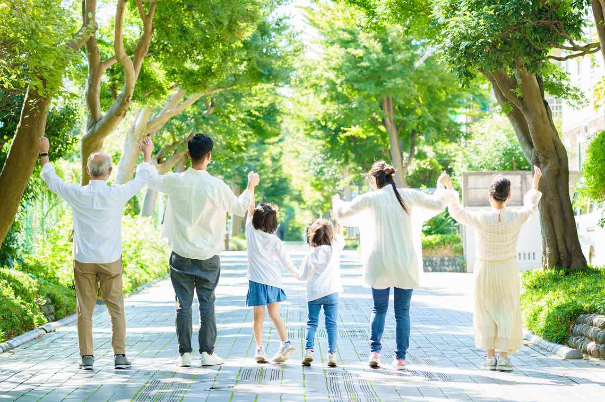

ドロカルは、自宅から徒歩15分圏内の、自分で歩いて回れるくらいのご近所という、非常に狭いエリアに焦点をあてています。
この狭いエリア内で、子どもにとって頼れる大人が1人でも多くいたら…そのために「顔見知りの大人」を増やすきっかけづくりができないかと考えたのが、ドロカル制作のスタートでした。
家族のこと、学校のこと、友達のこと….言葉にはしづらいさまざまな「こまった」を抱え、生きづらさを感じている子どもがいます。１つ１つの「こまった」は仮に小さいものであっても、それらが積み重なっていくと、生きづらさにつながってしまう。
そういった子どもたちの生きづらさを少しでも解消するには、どうしたらよいのか。企画チームが考えた結果、焦点を当てたのが、子どもを「気にする大人」を生活圏の被る「徒歩15分圏内」というエリアで増やすことでした。
そのきっかけづくりのツールとして、カードゲームは有効ではないかと考えたのです。
カードゲームは、お互い向き合って、手を動かしながらプレイしがら同じ場を共有します。また、初めての人同士がいっしょになると、大人でも子どもでも、間が持たなくてぎこちなくなってしまいがちですが、カードゲームなら黙々とやっててもいいし、話してもいい気軽さがあります。
ドロカルは、初めての人でも気軽に遊べるよう、ルールもシンプルにし、1回10分の短い時間で遊べるものにしました。ちょっと固い雰囲気の時にアイスブレイクになるような。
非常に短い時間ですが、それでも、同じ場にいて、顔を見て、ちょっとでも同じ笑いを共有共有できたら。
生活圏が重なる徒歩時15分圏内であれば、次に道で見かけたときに挨拶したり、会釈したり。
そして・・・、
「あるある（笑）！」
「ナイナイ（笑）！」
「いや、実はね昔・・（笑）」
とゲームの中で、地元ネタで盛り上がったら、少しだけ自分の住む周辺に関心が向くかもしれない。毎日歩いているご近所や、そこに住む人たちが、ただの風景ではなくなり、"気になる"関係になるのでは。
そんな想いを込めて制作したカードゲームがドロカルです。
もちろん大人同士、子ども同士が遊んでも純粋に楽しめるよう、作りました。
カフェや子ども食堂など、地域のコミュニティの集まる場所で大人も子どもも一緒に遊んでもらえたら嬉しいです。

徒歩15分圏内特化型カードゲームドロカル制作チーム一同
2023年1月28日